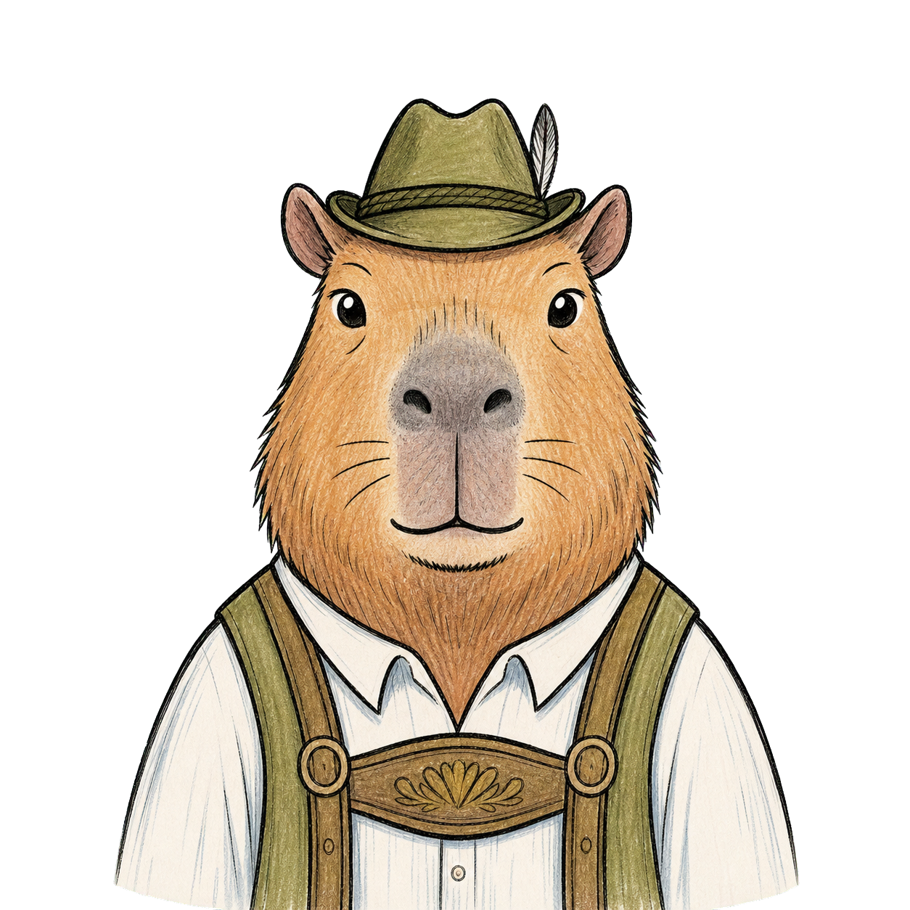
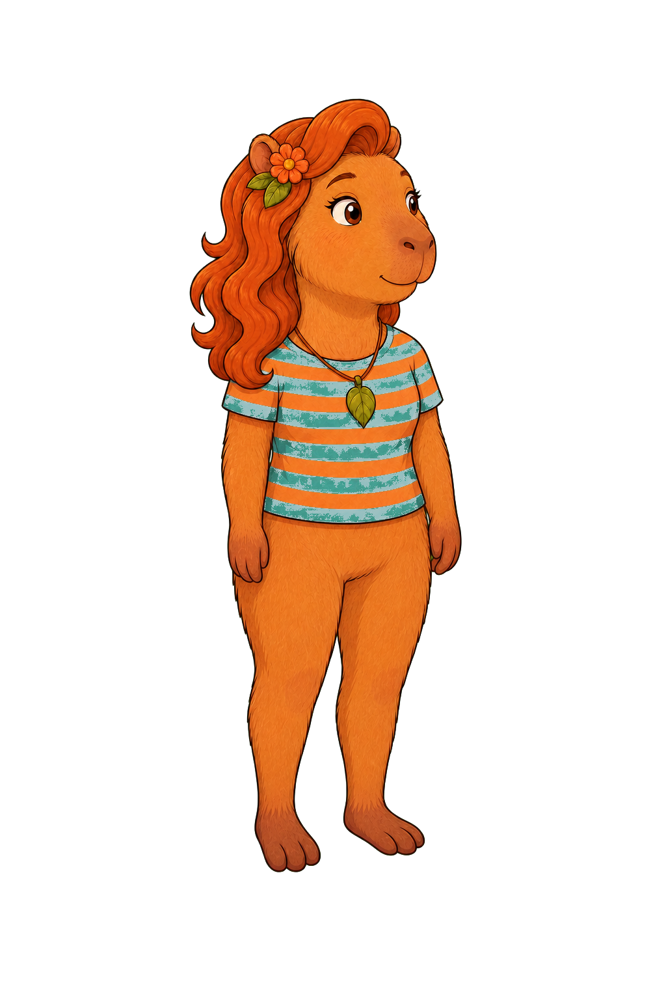
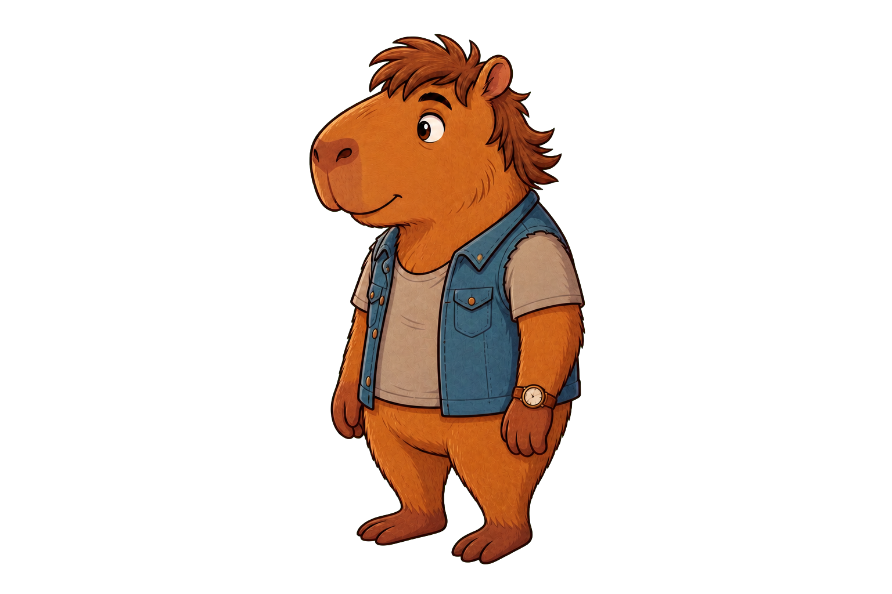

Hallo! Ich heiße Anna. Wie heißt du?
Olá! Eu me chamo Anna. Como você se chama?
Nesta aula você vai aprender a dizer seu nome, sua origem e onde mora.

Lektion 2Ouça a conversa completa e acompanhe a tradução em português.



Aprenda cada expressão como um bloco completo.
Olá! Eu me chamo Anna. Como você se chama?
Olá, Anna! Eu me chamo Lukas.
De onde você vem?
Eu venho do Brasil. E você?
Eu venho da Alemanha.
Eu moro em São Paulo.
Wie heißt du? é como se pergunta o nome de alguém de modo informal. O verbo heißen significa 'chamar-se'. O ß é um s forte: diga 'ráist'.
Wie heißt du? é como se pergunta o nome de alguém de modo informal. O verbo heißen significa 'chamar-se'. O ß é um s forte: diga 'ráist'.
O alemão fica visível; a explicação ajuda você a entender como usar.
Repare que eles seguem uma ordem clara: primeiro o nome, depois a origem e por fim a cidade. Você pode usar exatamente essa sequência ao se apresentar.
significa 'chamar-se'. O ß é um s forte: diga 'ráist'. Na forma formal vira
Note que o alemão não usa pronome reflexivo aqui: não existe um 'me', é só
já carrega a ideia de 'de onde', por isso não se repete outro 'de'. O verbo
Escolha a tradução correta e confira na hora.